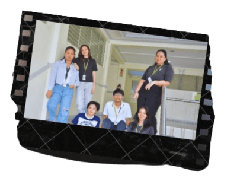
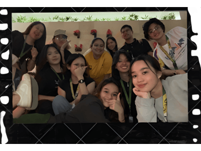

TAKING THE NEXT CHAPTER
THE TRANSITION THAT DEFINE US

Every Tamaraw’s story at FEU Roosevelt is a journey of transition, from fear to confidence, silence to expression, uncertainty to purpose. This feature follows seven Tamaraws, each with their own story of growth, resilience, and discovery.
Through friendships, shared challenges, and mentors who believed in them, they learned that transition isn’t just about change — it’s about becoming. Together, they embody the spirit of FEUR: that growth happens not alone, but side by side.


At FEU Roosevelt, every chapter ends with a new beginning — and every Tamaraw carries forward the legacy of courage, connection, and transformation.